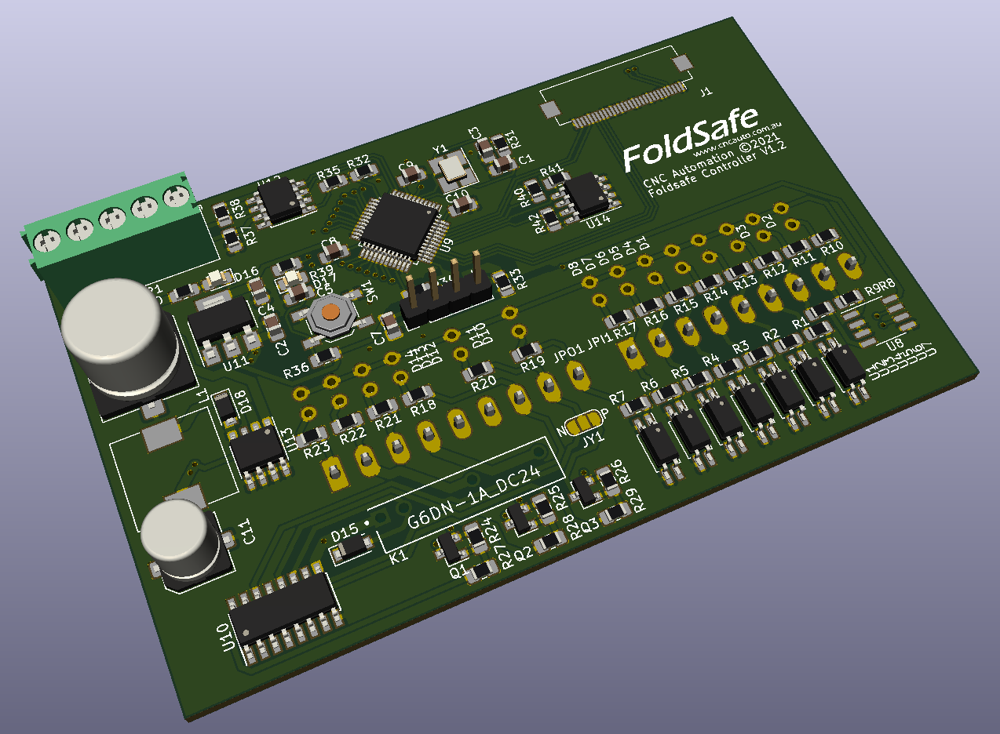

How chip shortage affected us
and how we managed it
It is a dark time for the electronic industry. This is a story about how we faced it.

It was a peaceful monday morning until our sales department called in an urgent meeting. We all rushed to see what the announcement was and they informed that our usual PLC supplier is unable to sell us new units due to supply shortages. On top of that, we've received 50 unit order from one of our biggest clients for a product that's based on this PLC module.
We've been using that PLC for our products for a long time and this is the first time we couldn't get a hold of them. I suggested the possibility of making our own PLC replacement and the management game me the go-ahead while they try to find a different supplier.
I should tell you more about the product before we get in to the nitty gritties. FoldSafe is a sheet metal press brake supervisory controller that is designed to protect the operator of the machine using some kind of sensor (A laser beam or an IR light curtain). It detects any obstructions on the machine where there shouldn't be any (like your hands) and automatically stops the machine from moving and warns the operator about it. The current PLC version uses two identical PLCs working together to monitor the inputs for dual redundancy of the safety system. The relays used to control the machine interlocks are special safety relays that are guaranteed to operate without issue like contact welding.
The first thing I did was to select a suitable microcontroller that can give us the same or better performance, the most important requirement being the ability to connect to an incremental encoder. I also made sure that specific microcontroller comes in a version thats rated for industrial use (Typically with higher operating temperature). Power supply and the opto-isolated inputs and outputs were selected just like we do in every other PCB design.
I also took this chance to upgrade the user interface from an old character display and a membrane keypad to a modern LCD and a resistive touch screen. Normally people wear gloves when they operate machines so its better to have a resistive touch screen rather than a capacitive one (There are capacitive touch screens that work with gloves but they are way expensive and hard to get).
This was the first product I designed after I came to Australia. It will forever hold a special place in my heart. Unfortunately I wont be able to share any design files for this project for obvious reasons.
Update
I'm currently working on the revision two of this product. Everything is way streamlined and we managed to add many features along the way.